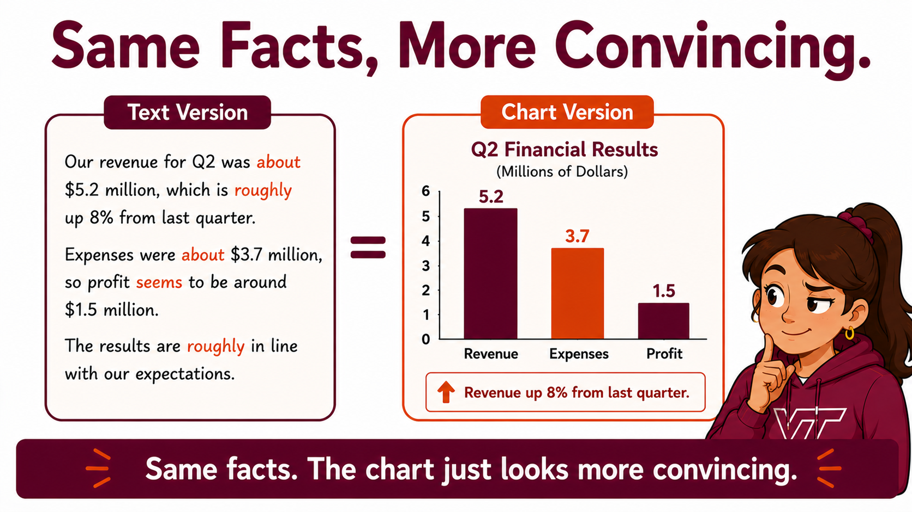

What the Picture Decided: Reading a Chart You Did Not Draw
Duration: 75 minutes · Platform: Hokie AI · Submission: Thread exported as a .txt and uploaded to Canvas before leaving class · Lecture Mode: exploratory
Learning Objectives
By the end of this lecture, students will be able to:
Count what a generated picture asserts that the request never supplied.
Record what a picture shows before changing it, and check whether each mark agrees with the value printed beside it.
Establish where a picture's figures came from, and say what the picture's own account of them does and does not settle.
Report what a request for a more finished version added to the evidence, including when it added nothing.
Reflect on what has to be true about a picture before they would put their name on it and send it to somebody who cannot see the numbers.
Section 1 of 5
INTRODUCTION

Four exact numbers. Nobody supplied a single one of them.
📋 Note for Students
Last week you learned to find the sentence in an AI answer where it stopped reporting and started deciding. The method was quotation. You pointed at the words.
Today the same question comes back as a picture, and a picture has no sentences to point at. What it decides is carried in figures, in the length of a bar, and in a headline that tells you what to conclude. Your work for the next hour is to count what it decided for you and then work out how much of that you would be willing to stand behind.
Your instructor is about to send one request to Hokie AI and put what comes back on screen. Read it before anybody explains it, and answer the three questions out loud with the rest of the room.
S3.1.1Reference prompt
Our retail company has had uneven sales performance across product categories over the past two years. Electronics and Home Goods have grown, while Apparel and Grocery have declined. Create a bar chart with necessary figures for a management presentation that shows the change by category. Add a clear takeaway headline.
Your instructor runs this prompt on screen. You do not paste it yourself.
Answer all three out loud. Your instructor is counting hands, not correcting anybody.
Now look at the request that produced it. Every category in the picture was named in the request AND every figure in the picture was not.
Two minutes to learn. Use it on every picture for the rest of the semester. If nothing is printed, say so out loud, because that is the finding.
A picture can be a correct drawing of its own numbers and still be a bad reason to act. Those are two separate questions and today asks both of them, in that order.
Section 2 of 5
DEMONSTRATION
One prompt runs on screen here and you do not paste it. It hands Hokie AI the same scenario you have already seen and asks for words.
S3.1.2Reference prompt
A regional retail company has seen mixed sales results over the past two years, with some product categories growing and some declining. Based only on this description, and without asking for more data, describe the overall sales trend in two to three sentences, including what is likely driving the pattern.
Your instructor runs this prompt on screen. You do not paste it yourself.
Same scenario, same assistant, one minute apart. The only thing that changed is what was asked for.
📋 Note for Students
Count the hedges as your instructor reads. Words like "appear", "likely", and "suggests" are how an answer avoids committing to anything, and the number that goes on the board for this one is the count of figures it was willing to give you.
Now ask the picture from the cold open the same question. How many claims does it make that your request never supplied? Every printed figure counts AND the headline counts if it says more than you did AND a bar counts on its own only where no label already states the same thing. Same scenario, same assistant, one minute apart.
Then the question that matters more than the answer to it. Your instructor asks where each figure in the chart came from, and the room decides what the reply is worth.
Carry both columns into your own run. The second one is where the work is.
💬 Discussion
Two questions to carry into your own run:
It tells you the figures are illustrative. What does knowing that settle, and what does it leave open?
If you had only the picture, with no conversation around it, what would you know about where its numbers came from?
Section 3 of 5
INTERACTION
TSession OpenerAI: acknowledge
Copy this block and paste it into Hokie AI to begin your session.
BUS 1204, Week 3 Lecture 1. You are an AI assistant for this session. The student will ask you to make and revise visuals for business scenarios. Respond to what they ask. When they ask about your reasoning, answer honestly, including what you assumed and what you cannot settle from what you were told. Acknowledge this session is open.
---
**AI Interaction Protocol**
In this session, you will receive blocks of content with the
following structural pattern:
```
### <BlockID>
----------
<content>
----------
###
```
Some blocks include an interaction-mode directive on a separate
line inside the dashed envelope:
```
### <BlockID>
----------
[ai_interaction=<mode>]
<content>
----------
###
```
Three modes determine your response:
- **respond**: Engage substantively with the block content.
Treat it as a prompt, question, or task that wants your
analytical response. Default for S blocks (prompts) and X
blocks (free exploration).
- **acknowledge**: Confirm receipt with one brief sentence
naming the block ID. Do not analyze, comment on, or expand on
the content. The student is filing the block for the record,
not asking for engagement. Default for T blocks (this opener),
R blocks (reflections), M CLOSE blocks (closing markers), Q
blocks (structured selections), and O blocks (ordering
selections).
- **archive**: Respond with only the block ID and nothing else.
Used for batched archival pastes where even brief
acknowledgment would clutter the thread.
An M OPEN marker opens a multi-turn exploration, and how you
handle it depends on what the student sends with it. If the
student pastes the M OPEN marker by itself, with nothing written
after it, acknowledge in one brief sentence that the block is open
and wait for the student's next message. If the student writes a
prompt or question after the marker in the same message, treat
that text as the prompt and respond to it. Always acknowledge an
M CLOSE marker.
If a block has no explicit `[ai_interaction=...]` directive, apply
the block-type default per the list above.
This protocol applies for the remainder of this session.
---
Paste the block below and run it once. Do not edit it and do not run it twice. Whatever comes back is what you work with for the rest of the hour, and what comes back will not be the same for everybody.
S3.1.3Standard PromptAI: respond
Our retail company has had uneven sales performance across product categories over the past two years. Electronics and Home Goods have grown, while Apparel and Grocery have declined. Create a bar chart for a management presentation that shows the change by category. Add a clear takeaway headline.
Open the M block, then work on what you just got. Three moves, in order, and the third one is the task.
Move zero. Type all four into the thread before you change anything.
What this block asks of you, in order. The third box is the task.
Record what you have before you touch it, all four lines, typed into the thread, and end that same message by asking where the figures came from AND say what the answer settles and what it leaves open AND send the sentence in quotation marks below, then count what the finished version added to your record and report what it added and what it left alone. All three.
Send this one exactly as it is written, because everyone in the room is sending it and the comparison at the end of the hour only works if we all asked for the same thing.
"Clean this up into a finished slide I can put in a board deck."
Put the record in your first message rather than on paper. Your export is what gets read later, and a comparison you cannot show is a comparison nobody can see you made.
Four turns will do it and eight is the ceiling. If the finished version added nothing you can find, that is a finding and you write it down as one, naming what you compared.
Optional. It carries no credit and it is the most interesting thing you can do with a spare three minutes.
Click Copy opening marker and paste it into Hokie AI to begin this block.
Interact with Hokie AI: ask questions, explore, respond. All of this exchange belongs to this block.
When finished, use the Copy closing marker button below to close the block in your thread.
M3.1.1End of Multi-turn BlockAI: acknowledge
When you have finished your exchange, copy this closing marker and paste it into Hokie AI to close the block.
Section 4 of 5
DISCUSSION
Everyone in this room sent the same request. Answer all three items from what is actually in your own thread, not from what you think should have happened. The survey carries no credit and it is here so the room can see what sixty-six runs of one prompt produced.
Q3.1.1Structured ResponseAI: acknowledge
Make your selections below, then click Copy and paste into Hokie AI.
Both counts come from this room. Neither of them was promised to you in advance.
Look at the first result. Everyone sent the same request and this room is holding several different kinds of object. Nobody chose that and nobody was told it would happen.
Now look at the third. Count how many people asked for a finished slide and got content added that their request never named.
💬 Discussion
Take these into the reflection:
You asked about appearance. What did the assistant treat that as permission to add?
Your neighbour's artifact is different from yours and neither of you did anything differently. What does that mean for anyone who receives one of these without the conversation attached?
One minute each way. Give your partner all three.
Compare with the person next to you. Say what kind of object you got AND say what the finished version added, or that nothing was added AND settle which of your two artifacts you would be willing to put your name on, and what you would have to check first.
Section 5 of 5
REFLECTION
Respond to all four dimensions above in your reflection.
Now write your reflection, in your own words and without help from the AI.
Your reflection needs all four of these. Name one precise thing your artifact asserted that you never supplied, and say what stood behind it AND say what your artifact told you about where its figures came from and what that account left open AND report one specific thing the finished version added to your record, or state clearly that nothing was added and name what you compared AND say what has to be true about a picture before you would put your name on it and send it to somebody who cannot see the numbers behind it. Respond to all four.
The fourth is the one that separates a good reflection from an adequate one. Saying that AI output should be checked is not enough. Say what you would check, and what would tell you a picture was not safe to send.
Write 80 to 160 words.
R3.1.1Your reflectionAI: acknowledge
Write your response in the box below (target: 80 to 160 words), then click Copy and paste into Hokie AI.
0 / 160 words ·
0 / 1280 characters
minimum: 80 words
Before you leave
Export this thread as a .txt file, then upload it to the Canvas assignment. Your work is not submitted until Canvas shows your file.